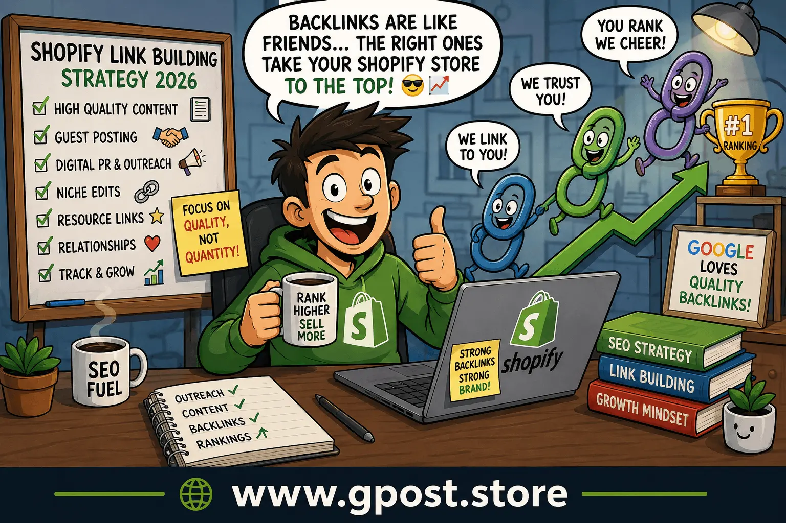
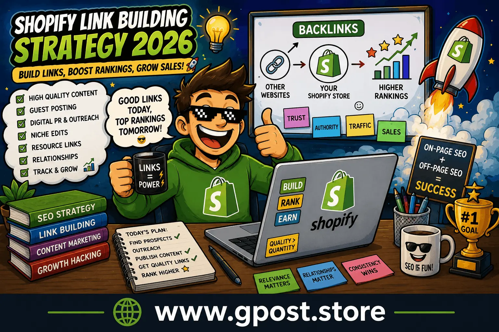
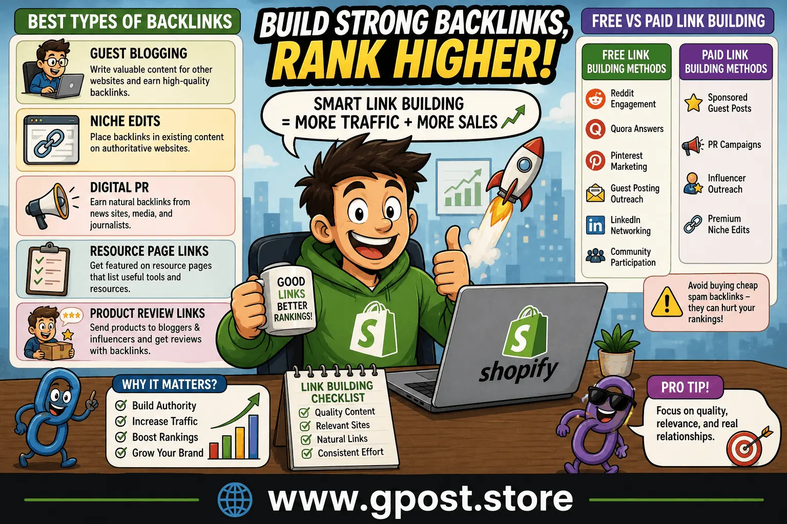

Shopify Link Building Strategy 2026: Complete SEO Guide for Higher Rankings
Shopify Link Building Strategy 2026 is one of the most effective ways to improve your Shopify store rankings, increase organic traffic, and build long-term domain authority. In today’s competitive eCommerce market, simply creating a Shopify store is not enough. Thousands of online stores compete for the same customers and keywords every day.
If your Shopify website is struggling to rank on Google, poor backlink authority may be the main reason. Search engines still rely heavily on backlinks to understand which websites deserve higher visibility. That is why building a smart and safe Shopify link building strategy matters more than ever in 2026.
This guide explains everything in beginner-friendly language. You will learn what Shopify link building is, why it matters, how to find backlink opportunities, advanced Shopify link building techniques, and the best link building strategy for Shopify websites.

Modern Shopify SEO requires high-quality backlinks and topical authority.
What is Shopify Link Building Strategy 2026?
Shopify Link Building Strategy 2026 refers to the process of acquiring high-quality backlinks from relevant and authoritative websites to improve the SEO performance of a Shopify store.
A backlink is a clickable link from another website pointing to your Shopify store. Google uses backlinks as trust signals. When trusted websites mention or link to your content, Google sees your store as more valuable and authoritative.
Simple Explanation
If a popular blog in your industry links to your Shopify store, that backlink acts like a recommendation. The more relevant and trustworthy the recommendations are, the better your rankings can become.
Why Backlinks Matter
- Increase Google rankings
- Improve domain authority
- Drive targeted organic traffic
- Boost brand credibility
- Help product pages rank faster
Why Shopify Stores Need Link Building in 2026
Shopify SEO competition has become much harder in recent years. Millions of Shopify stores are competing for search visibility. Without backlinks, even a well-designed Shopify website may struggle to rank.
Google’s algorithm now focuses heavily on authority, trust, relevance, and topical expertise. Link building helps strengthen all these signals.
Main Benefits of Shopify Link Building
- Higher keyword rankings
- Increased organic sales
- Better search visibility
- More indexed pages
- Improved trust and branding
- Long-term SEO growth

Quality backlinks help Shopify stores gain authority and rankings.
How Google Evaluates Shopify Backlinks
Google has become much smarter at detecting spammy SEO tactics. Modern link building focuses on quality instead of quantity.
Google Prefers
- Relevant backlinks
- Editorial links
- Contextual placements
- Real websites with traffic
- Natural anchor text
Google Penalizes
- Spam backlinks
- Automated link building
- Irrelevant backlinks
- PBN abuse
- Keyword stuffing
That is why a smart shopify off page seo strategy focuses on building genuine authority instead of manipulating rankings.
Best Types of Backlinks for Shopify Websites
Guest Blogging
Guest posting is still one of the safest and most effective SEO methods. You write high-quality content for another website and receive a backlink in return.
Guest blogging helps Shopify stores:
- Build authority
- Drive referral traffic
- Increase keyword rankings
- Improve brand awareness
Many brands combine guest posting with Guest Post Link Building campaigns to improve Shopify SEO authority naturally.
Niche Edits
Niche edits involve placing backlinks into existing content on authoritative websites. These links often work well because the pages are already indexed and trusted by Google.
Understanding the difference between guest posting and niche edits is important for choosing the right strategy. You can learn more in this detailed guide about Guest Posting vs Niche Edits.
Digital PR
Digital PR is becoming one of the best link building strategy for Shopify websites because it earns natural backlinks from media websites and journalists.
Resource Page Links
Many websites create resource pages listing useful tools, products, or services. Shopify store owners can request placements if their content adds value.
Product Review Links
Sending products to bloggers or influencers can generate backlinks, reviews, social signals, and referral traffic.
Free vs Paid Shopify Link Building
Free Link Building Methods
Free methods require time and effort but can deliver strong long-term results.
- Reddit engagement
- Quora answers
- Pinterest marketing
- Guest posting outreach
- LinkedIn networking
- Community participation
Paid Link Building
Paid strategies can accelerate growth if done carefully.
- Sponsored guest posts
- PR campaigns
- Influencer outreach
- Premium niche edits
Avoid buying cheap spam backlinks because they can damage your rankings.

Personalized outreach improves backlink success rates.
Advanced Shopify Link Building Techniques
Advanced shopify link building techniques help stores compete in difficult niches.
Topical Authority Clusters
Create multiple related articles around one main topic.
Example:
- Shopify SEO guide
- Shopify technical SEO
- Shopify product SEO
- Shopify off page SEO strategy
- Shopify keyword research
This helps Google understand your expertise.
Digital PR Campaigns
Create data-driven content journalists want to reference.
Examples:
- eCommerce statistics
- Industry reports
- Consumer behavior studies
- Shopify sales trends
Competitor Backlink Replication
Analyze competitor backlinks using tools like Ahrefs or SEMrush. Then contact those websites with better content or collaboration offers.
Podcast Outreach
Appearing on podcasts can earn backlinks, branding exposure, and targeted traffic.
Linkable Assets
Create content people naturally want to link to.
- Free tools
- Templates
- Checklists
- Statistics pages
- Infographics
How to Find Shopify Link Building Opportunities
Google Search Operators
Google operators help find guest posting opportunities quickly.
- "write for us" Shopify
- "guest post" ecommerce
- "submit article" SEO
- intitle:"Shopify" + "guest post"
Competitor Analysis
Study competitors ranking on Google page one.
Look for:
- Guest posts
- Directories
- Resource links
- Niche edits
- PR mentions
Email Outreach
Outreach remains one of the strongest shopify link building tips in 2026.
Improving email personalization and communication can significantly boost replies. These Outreach Response Rate Increase Tips can help improve your outreach success.
Outreach Best Practices
- Keep emails short
- Personalize your message
- Avoid spam templates
- Provide value first
- Follow up politely
Step-by-Step Shopify Link Building Process
Step 1: Research Your Industry
Understand your niche, competitors, and ranking opportunities.
Step 2: Create High-Quality Content
Content is the foundation of successful link building.
Best Shopify Content Types
- Buying guides
- Product comparisons
- SEO tutorials
- Industry reports
- Statistics articles
Step 3: Build Outreach Lists
Create a spreadsheet including:
- Website name
- Email address
- Domain authority
- Niche relevance
- Contact status
Step 4: Send Personalized Outreach
Successful outreach focuses on building relationships instead of simply asking for backlinks.
Step 5: Secure Contextual Backlinks
Prioritize backlinks placed naturally inside relevant content.
Step 6: Track SEO Results
Monitor:
- Keyword rankings
- Organic traffic
- Referral traffic
- Indexed pages
- Backlink growth
Anchor Text Strategy for Shopify SEO
Anchor text optimization is important for safe SEO growth.
Types of Safe Anchor Text
- Branded anchors
- Generic anchors
- Partial match anchors
- Natural sentence anchors
Avoid excessive exact-match keywords because they can appear manipulative.
Common Shopify Link Building Mistakes
Buying Spam Backlinks
Cheap backlinks from irrelevant websites can harm rankings.
Ignoring Relevance
Links from unrelated niches provide weak SEO value.
Over-Optimized Anchors
Using the same keyword repeatedly creates an unnatural backlink profile.
Low-Quality Content
Weak content rarely attracts quality backlinks.
Automated Link Building
Automation often creates spam footprints Google can detect.
Pro Shopify Link Building Tips
Focus on Relevance
A relevant backlink is usually more valuable than a random high-authority backlink.
Build Relationships
Networking with bloggers and publishers creates long-term SEO opportunities.
Use Internal Linking
Strong internal linking distributes authority throughout your Shopify store.
Create Link Magnets
Useful content naturally attracts backlinks.
Update Old Content
Refreshing existing articles can improve rankings and earn new backlinks.
Use Original Statistics
Data-driven content attracts journalists and bloggers.
Best Link Building Strategy for Shopify Websites
The best link building strategy for Shopify websites combines multiple SEO methods together naturally.
Recommended SEO Combination
- Technical SEO
- Guest posting
- Digital PR
- Niche edits
- Influencer outreach
- Content marketing
- Internal linking
This balanced strategy looks natural and sustainable to Google.
Local SEO and Shopify Link Building
If your Shopify store targets local customers, local backlinks also matter.
Local Link Opportunities
- Local blogs
- Business directories
- Chambers of commerce
- Event sponsorships
- Local media websites
How AI is Changing Link Building
AI tools help SEO professionals with research, outreach, and content planning.
AI Can Help With
- Prospect research
- Email personalization
- Keyword clustering
- Competitor analysis
- Content optimization
AI Cannot Replace
- Human relationships
- Real networking
- Industry expertise
- Trust building
Is Shopify Link Building Strategy 2026 Still Worth It?
Yes, absolutely. Backlinks remain one of Google’s strongest ranking factors.
However, modern SEO is about quality instead of quantity.
What Works in 2026
- Authority websites
- Relevant backlinks
- Helpful content
- Editorial mentions
- Digital PR
What No Longer Works
- Spam directories
- Mass forum spam
- Automated backlinks
- Irrelevant niche links
When to Avoid Aggressive Link Building
Avoid aggressive link building if:
- Your website has technical SEO issues
- Your content quality is weak
- Your Shopify store is incomplete
- User experience is poor
Always fix foundational SEO problems before scaling backlinks.
Google Guidelines for Safe Shopify SEO
Google recommends earning backlinks naturally through valuable content and real relationships.
Safe SEO Practices
- Publish helpful content
- Focus on user value
- Avoid manipulative tactics
- Diversify anchor text
- Prioritize quality over quantity
FAQs
What is Shopify link building strategy 2026 for beginners?
Shopify link building strategy 2026 is the process of getting high-quality backlinks to Shopify stores to improve Google rankings, organic traffic, and overall domain authority.
What is Shopify link building and why is it important?
Shopify link building is earning backlinks from relevant websites to improve SEO, increase search visibility, and build trust signals that help Shopify stores rank higher.
What mistakes should I avoid in Shopify link building?
Avoid spam backlinks, irrelevant sites, over-optimized anchor text, and automated link building, as these can harm rankings and trigger Google penalties.
Shopify guest posting vs niche edits: which is better?
Guest posting builds fresh content backlinks while niche edits add links to existing pages. Both are effective depending on speed and long-term SEO goals.
How can I build Shopify backlinks step by step?
Start with niche research, create valuable content, build outreach lists, send personalized emails, and acquire contextual backlinks from relevant websites.
What is the best SEO strategy for Shopify link building?
The best strategy combines guest posting, niche edits, digital PR, and content marketing to build authority, trust, and sustainable Shopify SEO growth.
How do Shopify backlinks help improve Google rankings?
Backlinks act as trust signals for Google, improving domain authority, indexing speed, and helping Shopify product and category pages rank higher.
Which tools are used for Shopify link building?
SEO tools like Ahrefs, SEMrush, and Google search operators help find backlink opportunities, analyze competitors, and track Shopify SEO performance.
How does link building increase Shopify traffic and authority?
Quality backlinks drive referral traffic, improve search rankings, and increase domain authority, which results in higher visibility and consistent Shopify sales.
What is the future of Shopify link building in SEO?
Future link building will focus on digital PR, topical authority, and AI-driven outreach, while spammy and low-quality backlink tactics will become less effective.
Conclusion
Shopify Link Building Strategy 2026 is essential for improving rankings, building authority, and driving long-term organic traffic. Successful Shopify SEO now depends on relevance, trust, quality content, and real outreach instead of outdated spam tactics.
The most successful Shopify stores focus on guest blogging, digital PR, niche edits, contextual backlinks, and strong content marketing strategies. By combining technical SEO with smart off-page SEO, you can create sustainable growth for your eCommerce business.
If you want to improve your Shopify SEO faster, start implementing these proven shopify link building tips today and focus on building genuine authority in your niche.
For more advanced SEO insights, visit Shopify SEO Resources.